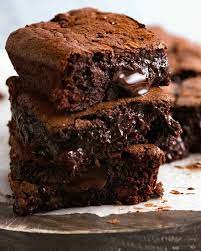

Chocolate Brownie

Description
This is a cakey, gooey desert rich with chocolate.
Ingredients
- butter 100g, chopped
- dark chocolate 200g, chopped
- eggs 4
- golden caster sugar 250g
- plain flour 100g
- baking powder 1 tsp
- cocoa 30g
Steps
- Heat the oven to 180C/fan 160C/gas 4.
- Line a 22cm square brownie tin with baking parchment.
- Melt the butter and chocolate together in a microwave or in a bowl set over a pan of simmering water.
- Whisk the eggs and sugar together until the mixture is light and fluffy.
- Fold the chocolate mixture into the egg mixture and sift on the flour, baking powder and cocoa.
- Fold this in to give a fudgy batter.
- To ramp it up, add 100g chopped white or milk chocolate chunks
- Bake for 25-30 minutes or until the top is cracked but the middle just set. Cool completely, then lift out of the tin and cut.